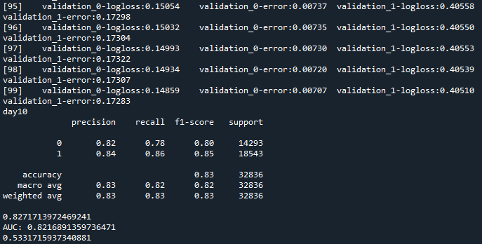

結果到現在還是沒有解決問題，training和validation的時候結果看起來都很正常，以loss來看也沒有overfitting的問題，但testing的時候就會變得跟大便一樣
在stack overflow有看到一些人也有相同的問題，原因不乏是testing data的分布和其他資料不一樣，又或著是在預測的時候有些資料處理沒做對
不過我有試著用結果正常的training data來切測試組，還是做出了一坨大便
所以可能是預測的時候應該要做甚麼我沒做，或著是我多做了嗎
不知道
我只知道我這假日又要繼續努力寫程式了，希望能趕快找到原因，就算是失敗的原因也可以
畢竟如果真的那麼好做，那其他人早就去做了，輪不到我這個菜雞
所以如果能找出是因為台股的pattern無法預測，又或著是資料不夠consistent之類的，那應該也算不錯的結果
讓我心灰意冷的結果 